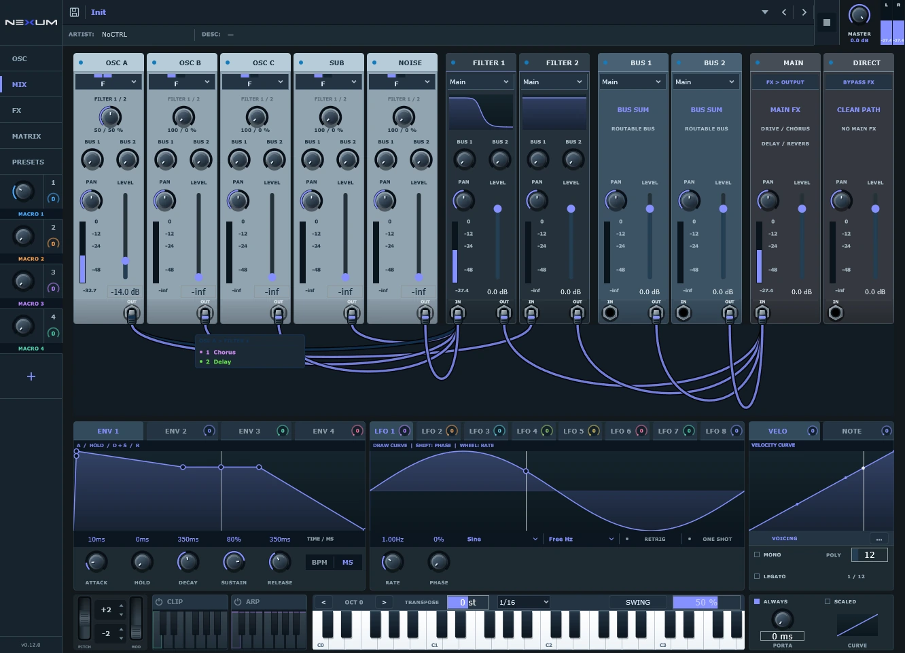

01 / Hybrid synthesizer
Nexum
Three oscillators. Five source modes. Effects between the generator and the filter.
v0.12.0 · Windows x64Explore ↗
NEXUM AUDIO / DEVELOPMENT EDITION 2026.11
Synthesize, shape, tune, move and record. Five open-source audio tools with a shared visual language and room for your own ideas.
A synthesizer with visible patch cables. A shared effects rack for your mixer. A vocal editor with hands-on note tools. A rhythm processor for shaping, gating and panning. And a focused recorder that turns a mixer signal into a take you can drag straight into the track.
02 / YOUR TOOLS
Use them individually.
Together as a suite.
Three oscillators. Five source modes. Effects between the generator and the filter.
17 shared rack effects, single-effect and chain presets, and hands-on macros.
Edit pitch, timing, gain and vibrato. Duplicate notes and export the result as audio.
Draw a shaper curve, program a gate pattern and add stereo movement.
Record the mixer. Preview the waveform. Drag the original WAV into your arrangement.
CURRENT FEATURE SNAPSHOT / 07 NOV 2026
Follow the signal.
Shape it along the way.

Connect an oscillator to a filter, then add a dedicated effect chain directly to that connection. The rack gets its own FX tab; the mixer keeps its effects visible beside the coloured cable.
Explore routing and modulation ↗Edit modulation and macro routes in one focused view, with visible source, destination and range.
Reduce vibrato, adjust segment gain or duplicate a vocal phrase into a harmony in Tune.
Single effects and complete racks share a library between Nexum and Nexum FX.
A simpler waveform recorder with timeline-aware capture and original audio drag-out.
Explore Rec ↗03 / OPEN BY DESIGN
Use it, understand it, change it. All five plugins include their original source code under AGPLv3. The full source download also includes the required libraries and build instructions.
Explore the open projectNo account. No subscription. Direct downloads.
04 / READY FOR YOUR SESSION
Development builds · packaged 07 Nov 2026 · Windows x64. Each ZIP includes VST3, standalone and license notices.
SHA-256 checksums ↗Extract the ZIP, copy the VST3 and rescan your plugins. Or open the included standalone.
Copy the entire folder ending in .vst3 to C:\Program Files\Common Files\VST3\NEXUM. Then run your DAW's plugin scan. Nexum is an instrument; FX, Tune and Gate are audio effects.
The available binaries are for Windows x64. Ready-made macOS and Linux downloads are not currently provided. The source code is openly available.
Yes, under the terms of AGPLv3. The source package includes the full license and notices for all bundled libraries.
Downloads do not include external sound, sample or preset packs. Import your own content into the libraries.
External preset import is experimental. A patch can depend on unavailable samples or wavetables, unsupported modulation, or different filter and effect algorithms. Imported settings do not guarantee the same sound. External commercial packs are not distributed here.